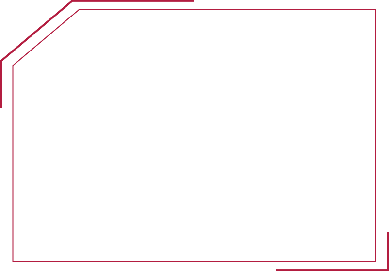
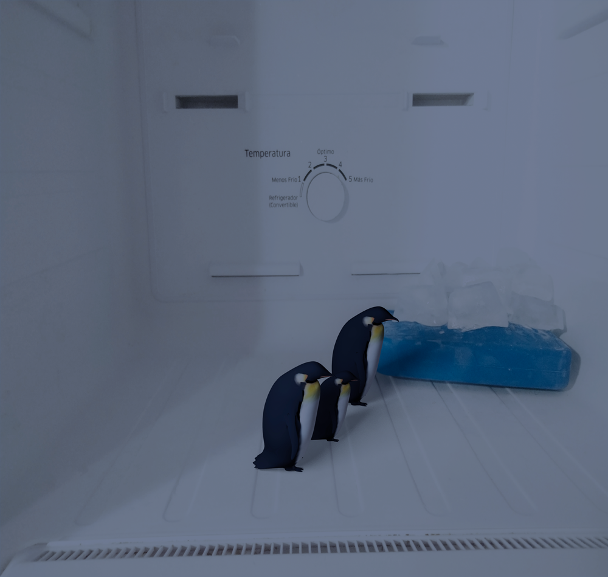
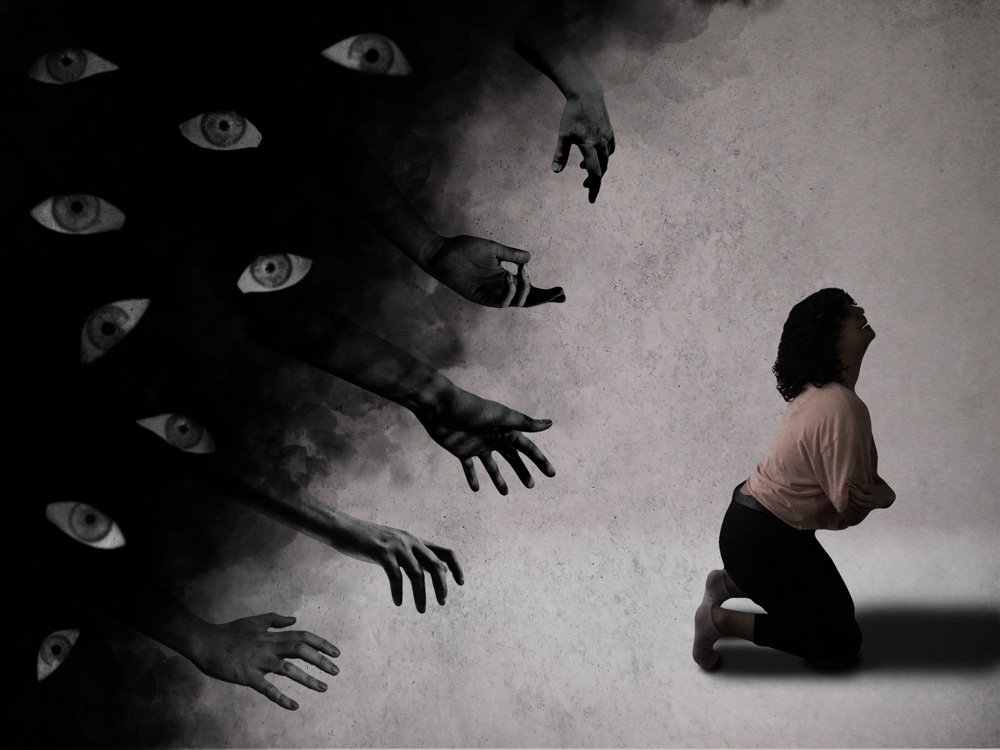
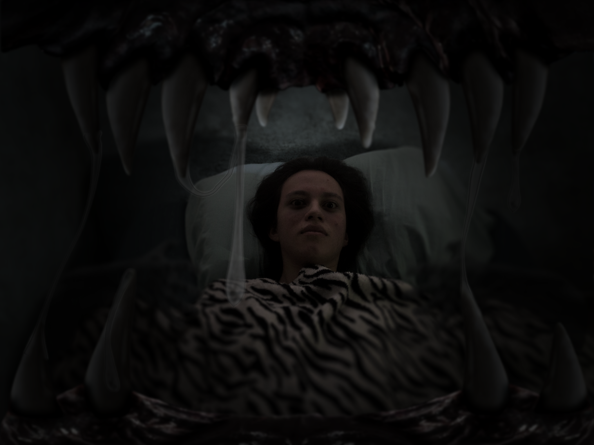
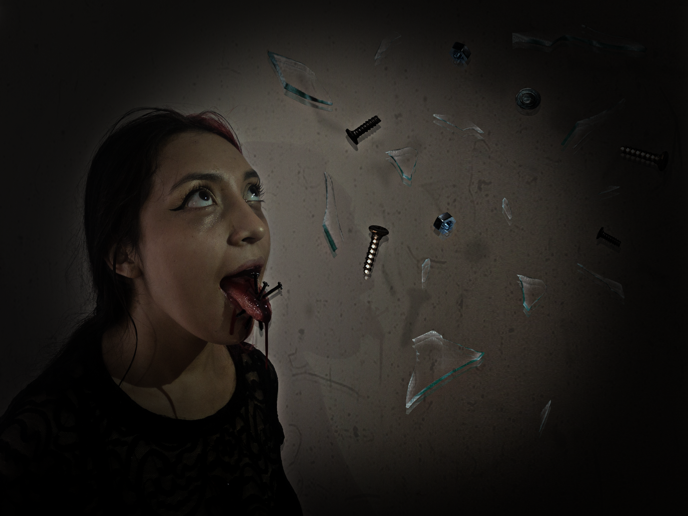

Fotografia
Siempre se ha conocido que los ojos son las ventanas al alma, es por esto que por medio de las imagenes se pueden plasmar momentos, contar historias y evocar emociones, que muchas veces son relativas ante la perspectiva de su espectador.






